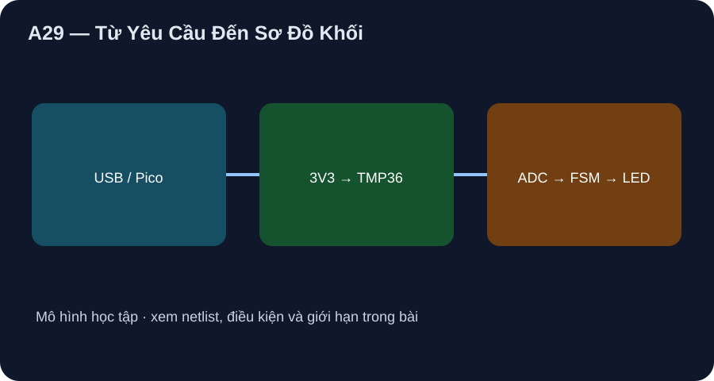

Từ Yêu Cầu Đến Sơ Đồ Khối
Viết yêu cầu có phép kiểm và truy vết thành net, BOM, phép tính và bằng chứng.
- Chuyển câu cần đo nhiệt thành phạm vi 20–40 °C, chu kỳ 1 s và hai ngưỡng có điều kiện kiểm.
- Truy vết ba net nguồn/tín hiệu/hồi, BOM và phép tính danh định từ yêu cầu.
- Tách cổng mô hình host khỏi phép đo và ký duyệt phần cứng.

Đọc hình bằng chữ
USB cấp Pico non-W; 3V3(OUT) của board cấp TMP36 và tụ bypass. TMP36 đưa VOUT về GP26/ADC0; firmware đổi mã và điều khiển LED GP25 tích hợp. AGND là đường hồi. Hình không diễn tả một PCB đã thiết kế.
1. Yêu cầu có thể chấm
Đồ án là bộ báo nhiệt phòng theo mô hình: mỗi giây log raw ADC và nhiệt danh định, LED trên Pico non-W bật khi T_est≥30 °C, tắt khi T_est≤28 °C, giữ ở giữa. Không có radio, nguồn lưới, Li-ion hay tải ngoài. Dải kích thích giấy 20–40 °C tương ứng TMP36 danh định 0,70–0,90 V theo ADI TMP36 Rev. H; điều đó chưa chứng minh accuracy của một mẫu thực.
2. Từ khối tới schematic/net
Trên Pico datasheet §2, pin 36 là 3V3(OUT), pin 31 GP26/ADC0, pin 33 AGND, LED GP25 thuộc board non-W. Theo ADI Fig. 4 bottom view, TMP36GT9Z TO-92 có chân 1 +VS, 2 VOUT, 3 GND. Net học tập: +3V3 nối pin 36→U1.1/C1.1; TEMP_V nối U1.2→pin 31; AGND nối U1.3/C1.2→pin 33. C1 gốm 0,1 µF đặt sát U1 theo ADI Fig. 24. BOM B1 Pico, U1 TMP36GT9Z, C1; board/revision/footprint thực chưa có.
3. Ngân sách và kế hoạch chứng cứ
Ở 3,3 V danh định, TMP36 nằm trên mức nguồn tối thiểu 2,7 V là 0,6 V; chưa đo rail nên đây không là headroom đã chứng minh. Dòng TMP36 dưới 50 µA theo bảng ADI; tổng dòng Pico chưa biết. Chạy mô phỏng P9-04 để kiểm trace; bảng đo tương lai cần VREF/VOUT/raw, chuẩn nhiệt, timestamp, model/revision và T_est−T_chuẩn từng điểm. Điền “chưa đo” cho hiện tại.
Xem hồ sơ bốn chặng và lab P9-04 để đọc BOM, netlist, bảng đo và giới hạn. Hình A29–A32 là sơ đồ khối tự vẽ, không là sơ đồ CAD/ERC, layout sản xuất hoặc phép đo board.
Viết ba yêu cầu đo được; ghi net +3V3/TEMP_V/AGND với số chân, BOM ba mục, tính VOUT ở 20 và 40 °C; nêu hai bằng chứng thiếu trước khi nhận thiết kế vật lý.
- 2 điểm: dải kích thích 20–40 °C, mẫu mỗi 1 s, LED on≥30/off≤28 °C theo T_est.
- 2 điểm: Pico 36→TMP36.1/C1; TMP36.2→Pico31; TMP36.3/C1→Pico33, góc nhìn đáy.
- 2 điểm: Pico/TMP36GT9Z/C1 0,1 µF; VOUT 0,70/0,90 V danh định.
- 2 điểm: thiếu rail/VREF/chuẩn nhiệt và marking/reviewer/ERC/đo thật; không chấm fake ADC là đo.